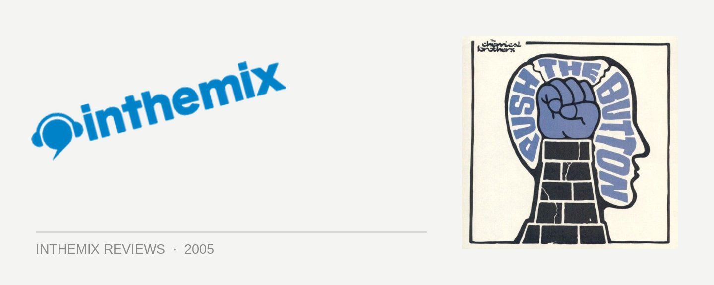

The Chemical Brothers - Push the Button
(Virgin/EMI)
With the evolution of dance music moving faster than the speed of light, it’s been a struggle for the old guard to stay in the ring, keep their fists up and continue the fight. Fatboy Slim and the Prodigy were both KO’d with their most recent efforts, hopelessly outmatched by the new hotshots that emerged to take their places, and speculation was growing that the Chemical Brothers had also grown too weary to put up a fight anymore. They’ve been the darlings of dance music for over a decade, but faced a setback several years ago with the poorly received Come With Us. With their new album Push the Button, they’ re back to prove they have what it takes to stay in the game and spar with the best of them.
Push the Button opens with a solid smack to the jaw in the form of Galvanise. With vocals from Q-Tip and a punchy dancefloor-friendly bassline, Galvanise is a solid declaration from the Chemical Brothers that they’ve still got what it takes. They’re the best in the business when it comes to picking collaborators, and for Push the Button they’ve pulled together a knockout ensemble: Anna-Lynne Williams, Anwar Superstar and Bloc Party funkster Kele Okereke. Former collaborator Tim Burgess also returns for what is sure to be the album’s next big single The Boxer, his effortless vocal charm gelling with the jittery electronics to deliver a tune that’s just impossible to resist.
The Chemical Brothers are really carving out their own musical space with Push the Button. While it’s linked to their sound of old, it also moves forward to explore new sonic landscapes and fresh musical dimensions. The ever-popular electro rears its head on the floor-filling Believe, this time given the unique Chemical Brothers styling and acid workover. The politically charged rapping in Left Right is backed up by a joyfully executed 70’s blaxploitation slant, while Marvo Ging and The Big Jump show that the boys still have a talent for finding that infectious groove.
The vibe isn’t quite as energetic as past offerings, but there’s subtle warmth to many of the songs that points to an emphasis on sophistication rather than block rockin’ beats. The Chemical Brothers are genuinely capable of conveying emotion in their music, and this is more pronounced than ever on tracks like Hold Tight London and Close Your Eyes. It all consolidates the idea that the Chemical Brothers deliver complete albums, rather than just a collection of singles hastily slapped together, and makes Push the Button their most musical offering yet.
Push the Button may not have the same furious immediacy of past efforts, but the Chemical Brothers can nonetheless claim a victory with their latest offering. They inhabit a musical space all of their own, managing to maintain their relevance where so many other mid-90’s dance acts have failed. Thus, they’ve stepped forward to claim the throne as the elder statesmen of dance music. Perhaps the metaphor of the Chemical Brothers as veteran title-prize boxers isn’t so apt after all. Imagine instead two wistful old guys sitting on the front porch, enjoying the wisdom of age and soaking up the twilight of their prime, content nonetheless they can still hold their own against the best of them. And yes, 10 years in dance music is a very long time.